# Load Packages
pacman::p_load(phyloseq, fun.gus, tidyverse, install = FALSE)
# load colors and shapes
source("code/R/plotting_aesthetics.R")
load("data/04b_Prokaryotic_TreeBuilding/tree_prok_physeq.RData")Curating and Cleaning Metadata
Purpose of this document
Load Packages and Functions
Loading Schmidt Metadata
load_schmidt_metadata(path_to_data_dir = "../SCHMIDT_LAB_DATA_LOG/",
name_vector = c("Station_Log", "Deployment_Log", "Freezer_Log", "FP_Process_Details", "FC_Process_Details", "DNA_Log"),
project = "AAM",
as_list = FALSE)[1] "Done!"sample_info_raw <- Freezer_Log %>%
dplyr::filter(Location_ID == "ERI") %>%
select(Sample_ID, Station_ID, Deployment_ID, Date_Collected, Notes) %>%
left_join(Deployment_Log, by = "Deployment_ID") %>%
select(Sample_ID, Station_ID = Station_ID.x, Date_Collected, Deployment_Depth_m, Integrated_Depths_m, Temp_at_Deployment, Notes.x, Notes.y) %>%
mutate(Depth = ifelse(!is.na(Deployment_Depth_m), Deployment_Depth_m,
ifelse(!is.na(Integrated_Depths_m), 5, NA)),
Notes = paste(Notes.x, Notes.y)) %>%
select(-Deployment_Depth_m, -Integrated_Depths_m, -Notes.x, -Notes.y) %>%
left_join(Station_Log, by = c("Station_ID", "Date_Collected" = "Date")) %>%
mutate(Notes = paste(Notes.x, Notes.y)) %>%
rowwise() %>%
mutate(Notes = list(c(Notes))) %>%
ungroup() %>%
select(Sample_ID, Station_ID, Date = Date_Collected, Depth, Station_Name, Water_Surface_Temp_C, Latitude, Longitude, Notes) %>%
mutate(Month = case_when(str_detect(Date, "202405") ~ "May",
str_detect(Date, "202408") ~ "August",
str_detect(Date, "202409") ~ "September"),
Depth_Class = ifelse(Depth == 5, "S", "B"),
Rep_ID = paste(Month, Station_ID, Depth_Class, sep = "_")) %>%
left_join(read_tsv("data/05_Metadata_Curation/basin_info.tsv"))
head(sample_info_raw)# A tibble: 6 × 13
Sample_ID Station_ID Date Depth Station_Name Water_Surface_Temp_C Latitude
<chr> <chr> <dbl> <dbl> <chr> <dbl> <dbl>
1 AAM_ERI_20… 15 2.02e7 5 ER15M 15.2 42.5
2 AAM_ERI_20… 15 2.02e7 5 ER15M 15.2 42.5
3 AAM_ERI_20… 15 2.02e7 5 ER15M 15.2 42.5
4 AAM_ERI_20… 15 2.02e7 5 ER15M 15.2 42.5
5 AAM_ERI_20… 15 2.02e7 5 ER15M 15.2 42.5
6 AAM_ERI_20… 15 2.02e7 5 ER15M 15.2 42.5
# ℹ 6 more variables: Longitude <chr>, Notes <list>, Month <chr>,
# Depth_Class <chr>, Rep_ID <chr>, Basin <chr>Joining sample data to physeq
new_metadata <-
sample_data(tree_prok_physeq) %>%
data.frame() %>%
left_join(DNA_Log) %>%
select(Sample_ID, DNA_ID:perc_reads_retained, Notes) %>%
left_join(sample_info_raw, by = "Sample_ID") %>%
mutate(Notes = paste(Notes.x, Notes.y)) %>%
select(-Notes.x, -Notes.y)Bringing in toxins
Load metadata
We will load in our particulate toxin metadata. Greg Boyer’s lab sent us the .xlsx as well as a .pdf summary of the toxin report (the .xlsx just has more detail but same values). I took the .xlsx report and cleaned up the data so that it would be easier to parse through R.
# read in cleaned csv file
toxin_metadata <- readr::read_csv("data/05_Metadata_Curation/toxins/toxins_cleaned.csv")Process metadata
Lets format our metadata to be cleaner
clean_toxins <- toxin_metadata %>%
mutate(
Month = case_when(
grepl("202408", Sample_ID) ~ "August",
grepl("202409", Sample_ID) ~ "September",
TRUE ~ "Unknown"
),
Station_ID = word(Sample_ID, 4, sep = "_"),
Depth_Class = "S",
Toxins_Measured = "Yes",
Microcystin_Total = ifelse(is.na(Microcystin_Total), 0, Microcystin_Total),
Anatoxin_Total = ifelse(is.na(Anatoxin_Total), 0, Anatoxin_Total)) %>%
filter(Filter_Type == "GFF") %>%
select(Microcystin_Total, Anatoxin_Total, Toxins_Measured, Month, Station_ID, Depth_Class)
sample_info <-
sample_info_raw %>%
left_join(clean_toxins, by = c("Month", "Depth_Class", "Station_ID"))
meta_w_toxins <- new_metadata %>%
left_join(clean_toxins, by = c("Month", "Depth_Class", "Station_ID"))Reading in Water Quality
raw_wq <- openxlsx::read.xlsx("data/05_Metadata_Curation/2024_CSMI_WaterQuality.xlsx", sheet = "Water Quality Data")
clean_wq <- raw_wq %>%
janitor:::clean_names() %>%
filter(ship != "R/V Lake Explorer II") %>%
select(site, date, depth_category, depth_collected_m:po_n_ug_n_l) %>%
mutate(adj_depth_category = ifelse(as.numeric(depth_collected_m)< 10, "EPI", depth_category),
adj_depth_category = ifelse(is.na(adj_depth_category), depth_category, adj_depth_category)) %>%
filter(adj_depth_category %in% c("EPI","B-")) %>%
mutate(Station_ID = str_replace(site, "G", "6"),
Station_ID = str_remove_all(Station_ID, "[^0-9]"),
Station_ID = str_replace(Station_ID, "609", "G09")) %>%
mutate(date = openxlsx::convertToDate(date),
Month = month(date, label = TRUE, abbr = FALSE)) %>%
mutate(Depth_Class = ifelse(adj_depth_category == "EPI", "S", "B")) %>%
mutate(across(depth_collected_m:po_n_ug_n_l, .fn = as.numeric)) %>%
group_by(Month, Depth_Class, Station_ID) %>%
summarize(across(depth_collected_m:po_n_ug_n_l, .fn = \(x)mean(x, na.rm = TRUE))) %>%
select(Station_ID, Month, Depth_Class, nh4_ug_n_l:po_n_ug_n_l)Okay let’s work with August (MESSY)
august_raw <- read_csv("data/05_Metadata_Curation/August_WaterQuality.csv") %>%
janitor::clean_names()
aug_1 <-
august_raw %>%
mutate(Depth_Class= case_when(depth_code == "Surface" ~ "S",
sample_depth_m < 10 ~ "S",
depth_code == "Bottom Minus" ~ "B",
TRUE ~ "DISCARD")) %>%
filter(Depth_Class != "DISCARD",
qc_type == "routine field sample") %>%
select(month, station_id, sample_depth_m, depth_code, Depth_Class, starts_with("analyte"), starts_with("value")) %>%
mutate(av1 = paste(analyte_1, value_1, sep = ";;;"),
av2 = paste(analyte_2, value_2, sep = ";;;"),
av3 = paste(analyte_3, value_3, sep = ";;;"),
av4 = paste(analyte_4, value_4, sep = ";;;"),
av5 = paste(analyte_5, value_5, sep = ";;;"),
av6 = paste(analyte_6, value_6, sep = ";;;"),
av7 = paste(analyte_7, value_7, sep = ";;;"),
av8 = paste(analyte_8, value_8, sep = ";;;"),
av9 = paste(analyte_9, value_9, sep = ";;;"),
av10 = paste(analyte_10, value_10, sep = ";;;"),
av11 = paste(analyte_11, value_11, sep = ";;;"),
av12 = paste(analyte_12, value_12, sep = ";;;"),
av13 = paste(analyte_13, value_13, sep = ";;;"),
av14 = paste(analyte_14, value_14, sep = ";;;"),
av15 = paste(analyte_15, value_15, sep = ";;;"),
av16 = paste(analyte_16, value_16, sep = ";;;"),
av17 = paste(analyte_17, value_17, sep = ";;;")
) %>%
select(month, station_id, sample_depth_m, depth_code, Depth_Class, starts_with("av")) %>%
pivot_longer(av1:av17) %>%
separate_wider_delim(value, delim = ";;;", names= c("Analyte", "Value")) %>%
select(-name) %>%
mutate(Value = ifelse(Value == "<0.5", 0.25, as.numeric(Value))) %>% # For orthophosphate < 0.5, set at 0.25 like for CSMI
filter(Analyte != "NA") %>%
group_by(month, station_id, sample_depth_m, depth_code, Depth_Class, Analyte) %>%
summarize(Value = mean(Value, na.rm = TRUE)) %>%
ungroup() %>%
pivot_wider(names_from = Analyte, values_from = Value, id_cols = c(month, station_id, sample_depth_m, depth_code, Depth_Class)) %>%
janitor::clean_names() %>%
group_by(month, station_id, depth_class) %>%
summarize(across(alkalinity_total_as_ca_co3:p_h, \(x)mean(x,na.rm = TRUE))) %>%
mutate(Station_ID = str_replace(station_id, "G", "6"),
Station_ID = str_remove_all(Station_ID, "[^0-9]"),
Station_ID = str_replace(Station_ID, "609", "G09")) %>%
select(Month = month, Station_ID, Depth_Class = depth_class,
n_ox_ug_n_l = nitrogen_total_oxidized,
srp_ug_p_l = phosphorus_orthophosphorus_as_p,
tn_ug_n_l = nitrogen_total,
tp_ug_p_l = phosphorus_total_as_p,
k_mg_l = potassium,
na_mg_l = sodium,
ca_mg_l = calcium,
mg_mg_l = magnesium,
cl_mg_l = chloride,
chl_a_ug_l = chlorophyll_a,
si_mg_si_o2_l = silica_dissolved_as_si,
pH = p_h)
# For these shallow nearshore stations, most data was collected for the "integrated, summer" type, rather than the surface.
aug_1 %>%
filter(is.na(n_ox_ug_n_l))# A tibble: 11 × 16
# Groups: Month, station_id [11]
station_id Month Station_ID Depth_Class n_ox_ug_n_l srp_ug_p_l tn_ug_n_l
<chr> <chr> <chr> <chr> <dbl> <dbl> <dbl>
1 ER932n August 932 S NaN NaN NaN
2 ER936n August 936 S NaN NaN NaN
3 ER937n August 937 S NaN NaN NaN
4 ER951n August 951 S NaN NaN NaN
5 ER958n August 958 S NaN NaN NaN
6 ER959n August 959 S NaN NaN NaN
7 ER964n August 964 S NaN NaN NaN
8 ER966n August 966 S NaN NaN NaN
9 ERG09n August G09 S NaN NaN NaN
10 ERI28n August 28 S NaN NaN NaN
11 ERN22n August 22 S NaN NaN NaN
# ℹ 9 more variables: tp_ug_p_l <dbl>, k_mg_l <dbl>, na_mg_l <dbl>,
# ca_mg_l <dbl>, mg_mg_l <dbl>, cl_mg_l <dbl>, chl_a_ug_l <dbl>,
# si_mg_si_o2_l <dbl>, pH <dbl>int_stations <- aug_1 %>%
filter(is.na(n_ox_ug_n_l)) %>%
pull(station_id)
aug_2 <-
august_raw %>%
mutate(Depth_Class= case_when(depth_code == "Surface" ~ "S",
sample_depth_m < 10 ~ "S",
station_id %in% int_stations & depth_code == "Integrated, Summer" ~ "S",
depth_code == "Bottom Minus" ~ "B",
TRUE ~ "DISCARD")) %>%
filter(Depth_Class != "DISCARD",
qc_type == "routine field sample") %>%
select(month, station_id, sample_depth_m, depth_code, Depth_Class, starts_with("analyte"), starts_with("value")) %>%
mutate(av1 = paste(analyte_1, value_1, sep = ";;;"),
av2 = paste(analyte_2, value_2, sep = ";;;"),
av3 = paste(analyte_3, value_3, sep = ";;;"),
av4 = paste(analyte_4, value_4, sep = ";;;"),
av5 = paste(analyte_5, value_5, sep = ";;;"),
av6 = paste(analyte_6, value_6, sep = ";;;"),
av7 = paste(analyte_7, value_7, sep = ";;;"),
av8 = paste(analyte_8, value_8, sep = ";;;"),
av9 = paste(analyte_9, value_9, sep = ";;;"),
av10 = paste(analyte_10, value_10, sep = ";;;"),
av11 = paste(analyte_11, value_11, sep = ";;;"),
av12 = paste(analyte_12, value_12, sep = ";;;"),
av13 = paste(analyte_13, value_13, sep = ";;;"),
av14 = paste(analyte_14, value_14, sep = ";;;"),
av15 = paste(analyte_15, value_15, sep = ";;;"),
av16 = paste(analyte_16, value_16, sep = ";;;"),
av17 = paste(analyte_17, value_17, sep = ";;;")
) %>%
select(month, station_id, sample_depth_m, depth_code, Depth_Class, starts_with("av")) %>%
pivot_longer(av1:av17) %>%
separate_wider_delim(value, delim = ";;;", names= c("Analyte", "Value")) %>%
select(-name) %>%
mutate(Value = ifelse(Value == "<0.5", 0.25, as.numeric(Value))) %>% # For orthophosphate < 0.5, set at 0.25 like for CSMI
filter(Analyte != "NA") %>%
group_by(month, station_id, sample_depth_m, depth_code, Depth_Class, Analyte) %>%
summarize(Value = mean(Value, na.rm = TRUE)) %>%
ungroup() %>%
pivot_wider(names_from = Analyte, values_from = Value, id_cols = c(month, station_id, sample_depth_m, depth_code, Depth_Class)) %>%
janitor::clean_names() %>%
group_by(month, station_id, depth_class) %>%
summarize(across(alkalinity_total_as_ca_co3:p_h, \(x)mean(x,na.rm = TRUE))) %>%
ungroup() %>%
mutate(Station_ID = str_replace(station_id, "G", "6"),
Station_ID = str_remove_all(Station_ID, "[^0-9]"),
Station_ID = str_replace(Station_ID, "609", "G09")) %>%
select(Month = month, Station_ID, Depth_Class = depth_class,
n_ox_ug_n_l = nitrogen_total_oxidized,
srp_ug_p_l = phosphorus_orthophosphorus_as_p,
tn_ug_n_l = nitrogen_total,
tp_ug_p_l = phosphorus_total_as_p,
k_mg_l = potassium,
na_mg_l = sodium,
ca_mg_l = calcium,
mg_mg_l = magnesium,
cl_mg_l = chloride,
chl_a_ug_l = chlorophyll_a,
si_mg_si_o2_l = silica_dissolved_as_si,
pH = p_h)
aug_2 %>%
filter(is.na(n_ox_ug_n_l))# A tibble: 0 × 15
# ℹ 15 variables: Month <chr>, Station_ID <chr>, Depth_Class <chr>,
# n_ox_ug_n_l <dbl>, srp_ug_p_l <dbl>, tn_ug_n_l <dbl>, tp_ug_p_l <dbl>,
# k_mg_l <dbl>, na_mg_l <dbl>, ca_mg_l <dbl>, mg_mg_l <dbl>, cl_mg_l <dbl>,
# chl_a_ug_l <dbl>, si_mg_si_o2_l <dbl>, pH <dbl># Better!Join Water Qualities together
all_months <- bind_rows(clean_wq, aug_2)
all_months %>%
pivot_longer(nh4_ug_n_l:pH, names_to = "Analyte", values_to = "Value") %>%
ggplot(aes(x = Month, y = Value)) +
geom_boxplot() +
geom_point() +
facet_wrap(~Analyte, scales = "free_y")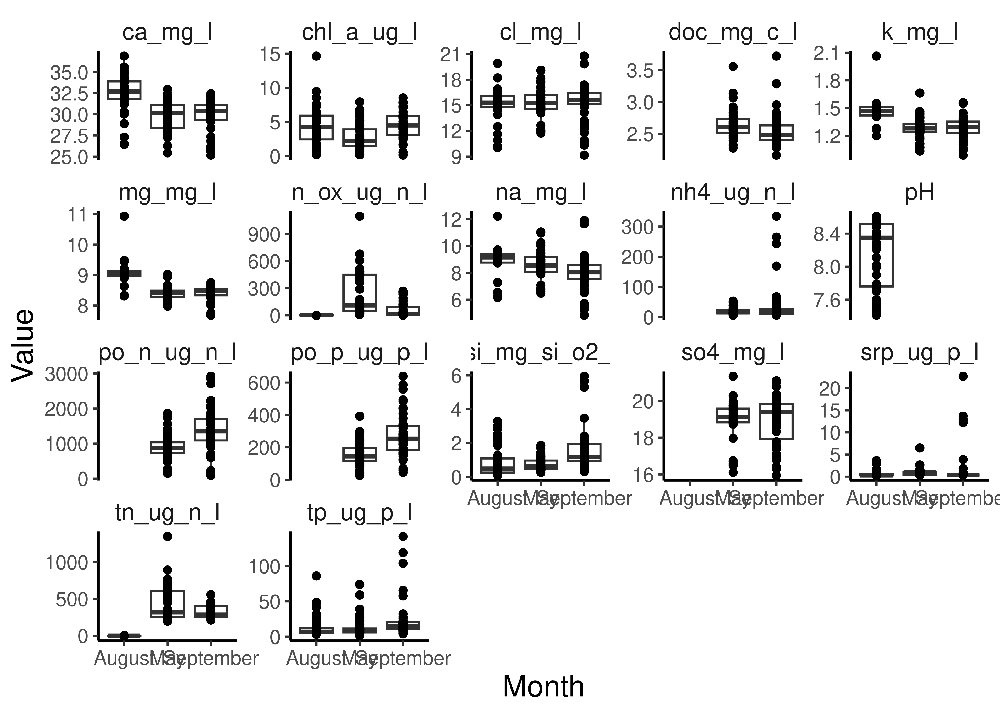
# Our nitrogens are in different units
all_months2 <-
all_months %>%
mutate(n_ox_ug_n_l = ifelse(Month == "August", n_ox_ug_n_l * 1000, n_ox_ug_n_l),
tn_ug_n_l = ifelse(Month == "August", tn_ug_n_l * 1000, tn_ug_n_l),
np_ratio = (tn_ug_n_l / 14) / (tp_ug_p_l/31))
all_months2 %>%
pivot_longer(nh4_ug_n_l:np_ratio, names_to = "Analyte", values_to = "Value") %>%
ggplot(aes(x = Month, y = Value)) +
geom_boxplot() +
geom_point() +
facet_wrap(~Analyte, scales = "free_y")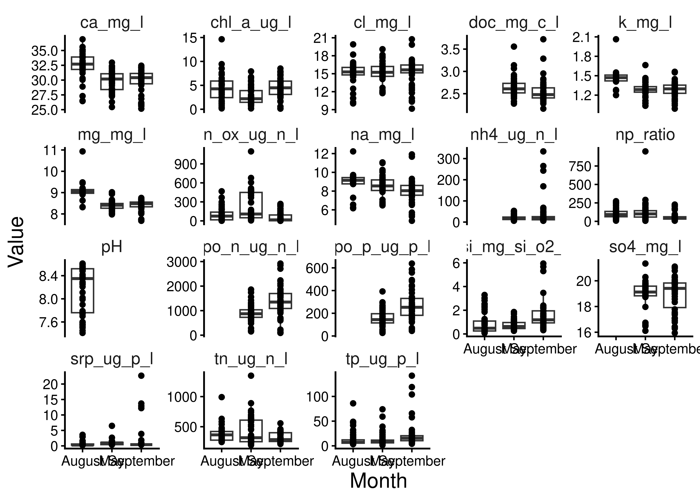
missings <- anti_join(meta_w_toxins, all_months2) %>%
select(Station_ID, Month, Missing_DC = Depth_Class)
missings Station_ID Month Missing_DC
1 EB06 September S
2 EB06 September B# GOODGOOD!
Join Water Quality and CTD
ctd_data <- read_csv("data/05_Metadata_Curation/all_ctd_summary.csv")
clean_ctd_for_join <- ctd_data %>%
select(Station_ID, Month, starts_with("bottom"), starts_with("intsurf")) %>%
pivot_longer(!c(Station_ID, Month)) %>%
separate_wider_delim(name, delim = "_", names = c("Depth_Class","CTD_Parameter")) %>%
mutate(Depth_Class = ifelse(Depth_Class == "bottom", "B", "S")) %>%
pivot_wider(names_from = CTD_Parameter, values_from = value, names_prefix = "ctd_")
station_lats <- readxl::read_xlsx("data/external_data/20240404_Scofield_Erie2024_CSMI_StationList.xlsx") %>%
select(Station_ID = Our_Station_ID, Latitude = lattDD_target, Longitude = LonDD_target)
clean_ctd_for_join$Station_ID[!clean_ctd_for_join$Station_ID %in% station_lats$Station_ID]character(0)summarized_ctd_latlon <-
clean_ctd_for_join %>%
left_join(station_lats)
ctd_and_wq <- summarized_ctd_latlon %>%
full_join(all_months2)pacman::p_load(sf, terra, install = FALSE)
# Define some shapes and objects
raw_erie <- read_sf("data/spatial_imports/hydro_p_LakeErie/hydro_p_LakeErie.shp") %>%
st_transform(crs = "EPSG:4326")
erie_outline <- raw_erie %>%
st_union()
meta_sf <- ctd_and_wq %>%
dplyr::filter(!is.na(Longitude)) %>%
st_as_sf(coords = c("Longitude","Latitude"), crs = "EPSG:4326") %>%
mutate(Month = factor(Month, levels = c("May","August","September") ))bottom_sf <- meta_sf %>%
dplyr::filter(Depth_Class == "B")
shift_bottom_sf <- bottom_sf
st_geometry(shift_bottom_sf) <- st_geometry(bottom_sf) + c(.06,-.03)
shift_bottom_sf <- st_set_crs(shift_bottom_sf, st_crs(bottom_sf))
meta_sf %>%
mutate(Month = factor(Month, levels = c("May","August","September"))) %>%
ggplot() +
geom_sf(data = erie_outline, fill = NA) +
geom_sf(data = shift_bottom_sf, aes(color = ctd_temperature), size = 5, alpha = 1) +
geom_sf(aes(color = ctd_temperature), size = 5, alpha = 1) +
scale_color_distiller(palette = "Spectral", na.value = "white") +
labs(color = "Integrated\nTemperature (C)") +
facet_wrap(~Month) +
theme(axis.line = element_blank(),
axis.text = element_blank(),
axis.ticks = element_blank(),
strip.text = element_blank()
)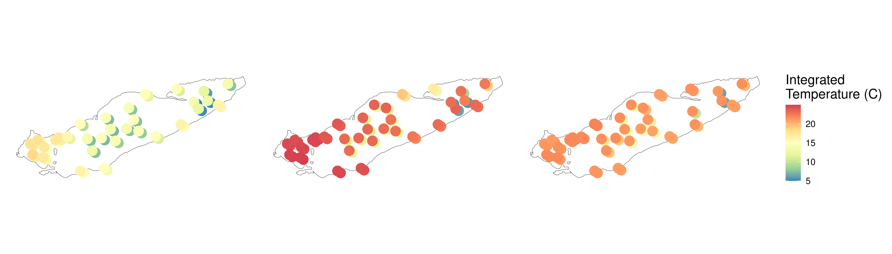
meta_sf %>%
mutate(Month = factor(Month, levels = c("May","August","September"))) %>%
ggplot() +
geom_sf(data = erie_outline, fill = NA) +
geom_sf(data = shift_bottom_sf, aes(color = ctd_oxygen), size = 5, alpha = 1) +
geom_sf(aes(color = ctd_oxygen), size = 5, alpha = 1) +
scale_color_distiller(palette = "Spectral", na.value = "white") +
labs(color = "Dissolved\nOxygen") +
facet_wrap(~Month) +
theme(axis.line = element_blank(),
axis.text = element_blank(),
axis.ticks = element_blank(),
strip.text = element_blank()
)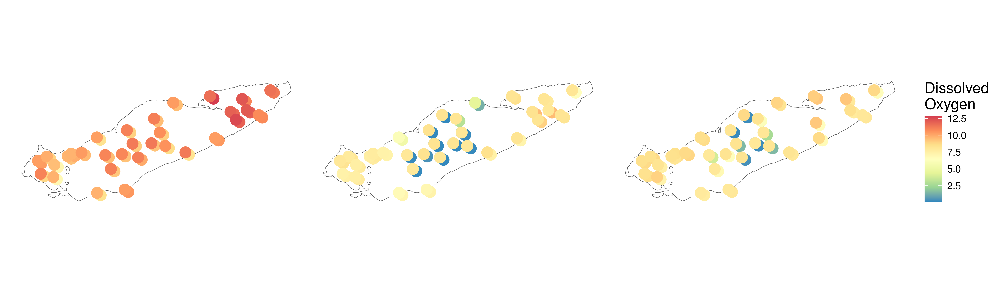
meta_sf %>%
mutate(Month = factor(Month, levels = c("May","August","September"))) %>%
filter(Month == "August") %>%
ggplot() +
geom_sf(data = erie_outline, fill = NA) +
geom_sf(data = filter(shift_bottom_sf, Month == "August"), aes(color = ctd_oxygen), size = 5, alpha = 1) +
geom_sf(aes(color = ctd_oxygen), size = 5, alpha = 1) +
scale_color_distiller(palette = "Spectral", na.value = "white") +
labs(color = "Dissolved\nOxygen") +
facet_wrap(~Month) +
theme(axis.line = element_blank(),
axis.text = element_blank(),
axis.ticks = element_blank(),
strip.text = element_blank()
)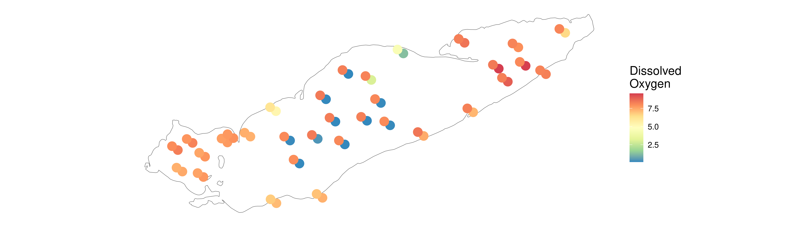
ggsave("test.png", width = 7, height = 7, dpi = 300)
meta_sf %>%
mutate(Month = factor(Month, levels = c("May","August","September"))) %>%
filter(Month == "August") %>%
ggplot() +
geom_sf(data = erie_outline, fill = NA) +
geom_sf(data = filter(shift_bottom_sf, Month == "August"), aes(color = srp_ug_p_l), size = 5, alpha = 1) +
geom_sf(aes(color = srp_ug_p_l), size = 5, alpha = 1) +
scale_color_distiller(palette = "Spectral", na.value = "white") +
labs(color = "SRP (ug P/L)") +
facet_wrap(~Month) +
theme(axis.line = element_blank(),
axis.text = element_blank(),
axis.ticks = element_blank(),
strip.text = element_blank()
)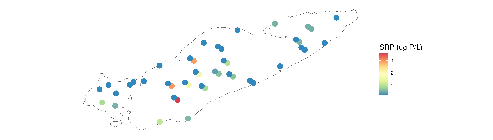
ggsave("test.png", width = 7, height = 7, dpi = 300)
meta_sf %>%
mutate(Month = factor(Month, levels = c("May","August","September"))) %>%
ggplot() +
geom_sf(data = erie_outline, fill = NA) +
geom_sf(data = shift_bottom_sf, aes(color = tn_ug_n_l), size = 5, alpha = 1) +
geom_sf(aes(color = tn_ug_n_l), size = 5, alpha = 1) +
scale_color_distiller(palette = "Spectral", na.value = "white", transform = "log10") +
labs(color = "TN (ug N/L)") +
facet_wrap(~Month) +
theme(axis.line = element_blank(),
axis.text = element_blank(),
axis.ticks = element_blank(),
strip.text = element_blank()
)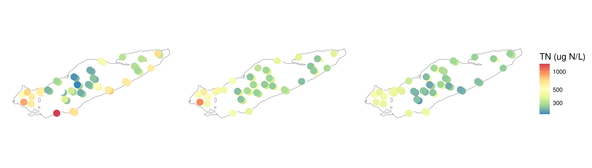
meta_sf %>%
mutate(Month = factor(Month, levels = c("May","August","September"))) %>%
ggplot() +
geom_sf(data = erie_outline, fill = NA) +
geom_sf(data = shift_bottom_sf, aes(color = tp_ug_p_l), size = 5, alpha = 1) +
geom_sf(aes(color = tp_ug_p_l), size = 5, alpha = 1) +
scale_color_distiller(palette = "Spectral", na.value = "white", transform = "log10") +
labs(color = "TP (ug P/L)") +
facet_wrap(~Month) +
theme(axis.line = element_blank(),
axis.text = element_blank(),
axis.ticks = element_blank(),
strip.text = element_blank()
)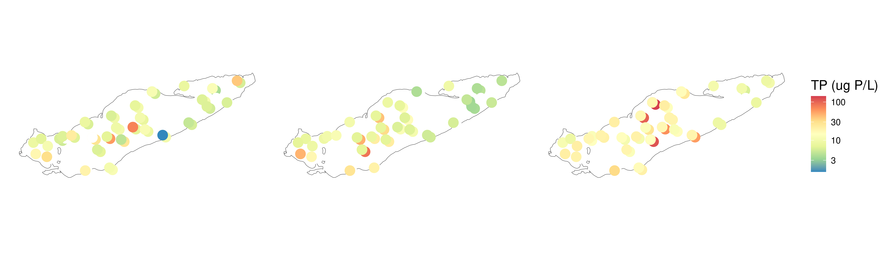
meta_sf %>%
mutate(Month = factor(Month, levels = c("May","August","September"))) %>%
ggplot() +
geom_sf(data = erie_outline, fill = NA) +
geom_sf(data = shift_bottom_sf, aes(color = np_ratio), size = 5, alpha = 1) +
geom_sf(aes(color = np_ratio), size = 5, alpha = 1) +
scale_color_distiller(palette = "Spectral", na.value = "white", transform = "log10") +
labs(color = "N:P (Molar)") +
facet_wrap(~Month) +
theme(axis.line = element_blank(),
axis.text = element_blank(),
axis.ticks = element_blank(),
strip.text = element_blank()
)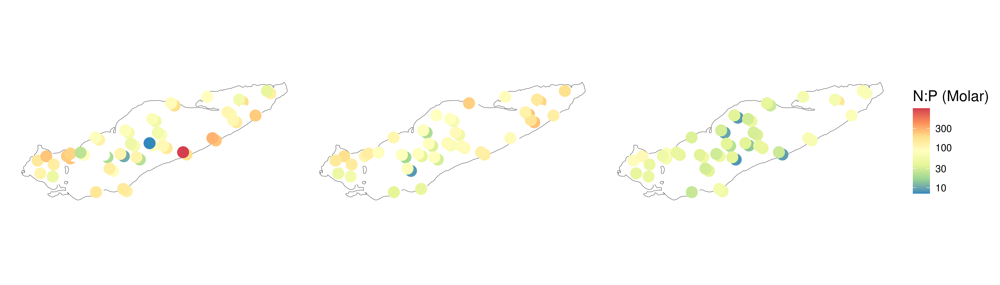
meta_sf %>%
mutate(Month = factor(Month, levels = c("May","August","September"))) %>%
ggplot() +
geom_sf(data = erie_outline, fill = NA) +
geom_sf(data = shift_bottom_sf, aes(color = srp_ug_p_l), size = 5, alpha = 1) +
geom_sf(aes(color = srp_ug_p_l), size = 5, alpha = 1) +
scale_color_distiller(palette = "Spectral", na.value = "white", transform = "log10") +
labs(color = "SRP (ug P/L)") +
facet_wrap(~Month) +
theme(axis.line = element_blank(),
axis.text = element_blank(),
axis.ticks = element_blank(),
strip.text = element_blank()
)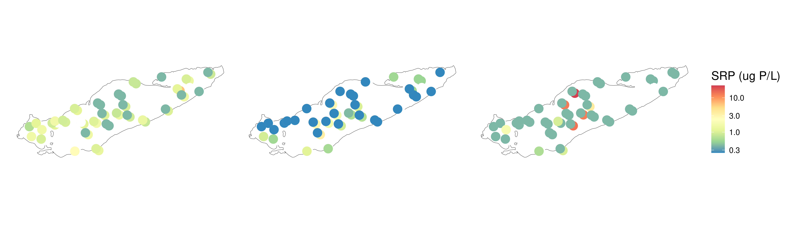
meta_sf %>%
mutate(Month = factor(Month, levels = c("May","August","September"))) %>%
ggplot() +
geom_sf(data = erie_outline, fill = NA) +
geom_sf(data = shift_bottom_sf, aes(color = ctd_beamAttenuation), size = 5, alpha = 1) +
geom_sf(aes(color = ctd_beamAttenuation), size = 5, alpha = 1) +
scale_color_distiller(palette = "Spectral", na.value = "white", transform = "log10") +
labs(color = "Beam Attenuation") +
facet_wrap(~Month) +
theme(axis.line = element_blank(),
axis.text = element_blank(),
axis.ticks = element_blank(),
strip.text = element_blank()
)meta_sf %>%
mutate(Month = factor(Month, levels = c("May","August","September"))) %>%
ggplot() +
geom_sf(data = erie_outline, fill = NA) +
geom_sf(data = shift_bottom_sf, aes(color = ctd_beamAttenuation), size = 5, alpha = 1) +
geom_sf(aes(color = ctd_beamAttenuation), size = 5, alpha = 1) +
scale_color_distiller(palette = "Spectral", na.value = "white", transform = "log10", limits = c(NA,10)) +
labs(color = "Beam Attenuation\n(remove bloom)") +
facet_wrap(~Month) +
theme(axis.line = element_blank(),
axis.text = element_blank(),
axis.ticks = element_blank(),
strip.text = element_blank()
)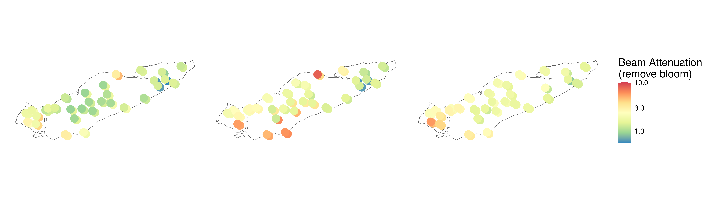
meta_sf %>%
mutate(Month = factor(Month, levels = c("May","August","September"))) %>%
ggplot() +
geom_sf(data = erie_outline, fill = NA) +
geom_sf(data = shift_bottom_sf, aes(color = ctd_upoly), size = 5, alpha = 1) +
geom_sf(aes(color = ctd_upoly), size = 5, alpha = 1) +
scale_color_distiller(palette = "Spectral", na.value = "white", transform = "log10") +
labs(color = "UPoly") +
facet_wrap(~Month) +
theme(axis.line = element_blank(),
axis.text = element_blank(),
axis.ticks = element_blank(),
strip.text = element_blank()
)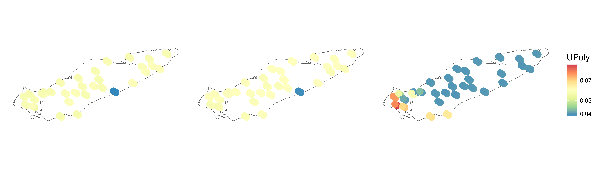
Simplified for paper
bottom_sf <- meta_sf %>%
dplyr::filter(Depth_Class == "B", Month != "May")
shift_bottom_sf <- bottom_sf
st_geometry(shift_bottom_sf) <- st_geometry(bottom_sf) + c(.06,-.03)
shift_bottom_sf <- st_set_crs(shift_bottom_sf, st_crs(bottom_sf))
meta_sf %>%
filter(Month != "May") %>%
mutate(Month = factor(Month, levels = c("May","August","September"))) %>%
ggplot() +
geom_sf(data = erie_outline, fill = NA) +
geom_sf(data = shift_bottom_sf, aes(color = tn_ug_n_l), size = 5, alpha = 1) +
geom_sf(aes(color = tn_ug_n_l), size = 5, alpha = 1) +
scale_color_distiller(palette = "Spectral", na.value = "white", transform = "log10") +
labs(color = "TN (ug N/L)") +
facet_wrap(~Month) +
theme(axis.line = element_blank(),
axis.text = element_blank(),
axis.ticks = element_blank(),
strip.text = element_blank()
)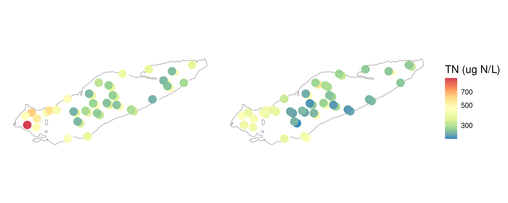
meta_sf %>%
filter(Month != "May") %>%
mutate(Month = factor(Month, levels = c("May","August","September"))) %>%
ggplot() +
geom_sf(data = erie_outline, fill = NA) +
geom_sf(data = shift_bottom_sf, aes(color = tp_ug_p_l), size = 5, alpha = 1) +
geom_sf(aes(color = tp_ug_p_l), size = 5, alpha = 1) +
scale_color_distiller(palette = "Spectral", na.value = "white", transform = "log10") +
labs(color = "TP (ug P/L)") +
facet_wrap(~Month) +
theme(axis.line = element_blank(),
axis.text = element_blank(),
axis.ticks = element_blank(),
strip.text = element_blank()
)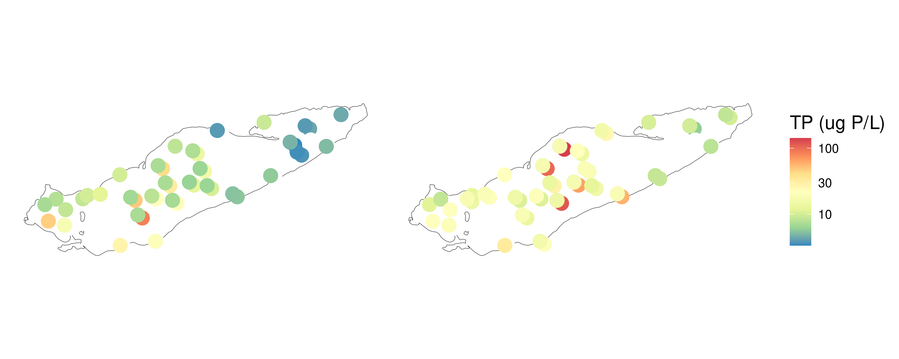
meta_sf %>%
filter(Month != "May") %>%
mutate(Month = factor(Month, levels = c("May","August","September"))) %>%
ggplot() +
geom_sf(data = erie_outline, fill = NA) +
geom_sf(data = shift_bottom_sf, aes(color = np_ratio), size = 5, alpha = 1) +
geom_sf(aes(color = np_ratio), size = 5, alpha = 1) +
scale_color_distiller(palette = "Spectral", na.value = "white", transform = "log10") +
labs(color = "N:P (Molar)") +
facet_wrap(~Month) +
theme(axis.line = element_blank(),
axis.text = element_blank(),
axis.ticks = element_blank(),
strip.text = element_blank()
)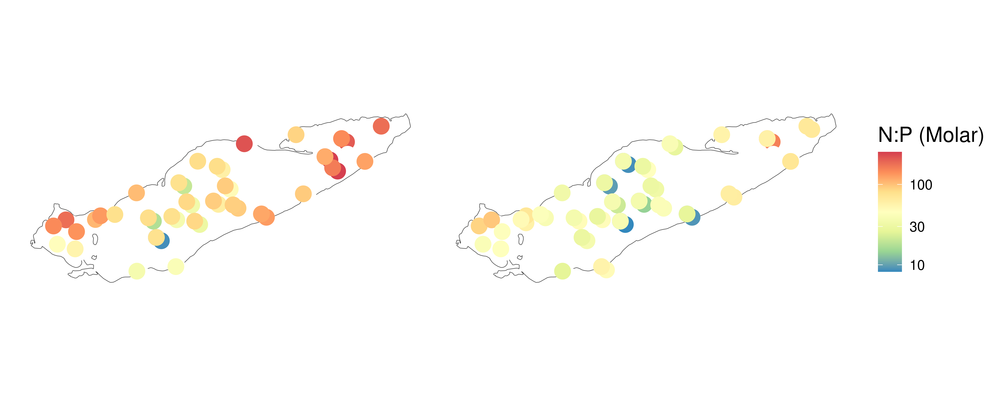
meta_sf %>%
filter(Month != "May") %>%
mutate(Month = factor(Month, levels = c("May","August","September"))) %>%
ggplot() +
geom_sf(data = erie_outline, fill = NA) +
geom_sf(data = shift_bottom_sf, aes(color = srp_ug_p_l), size = 5, alpha = 1) +
geom_sf(aes(color = srp_ug_p_l), size = 5, alpha = 1) +
scale_color_distiller(palette = "Spectral", na.value = "white", transform = "log10") +
labs(color = "SRP (ug P/L)") +
facet_wrap(~Month) +
theme(axis.line = element_blank(),
axis.text = element_blank(),
axis.ticks = element_blank(),
strip.text = element_blank()
)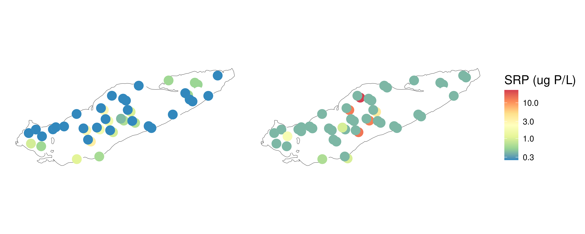
meta_sf %>%
filter(Month != "May", Depth_Class == "S") %>%
mutate(Month = factor(Month, levels = c("May","August","September"))) %>%
ggplot() +
geom_sf(data = erie_outline, fill = NA) +
geom_sf(aes(color = ctd_temperature), size = 5, alpha = 1) +
scale_color_distiller(palette = "Spectral", na.value = "white") +
labs(color = "Surface\nTemp. (°C)") +
facet_wrap(~Month) +
theme(axis.line = element_blank(),
axis.text = element_blank(),
axis.ticks = element_blank(),
strip.text = element_blank()
)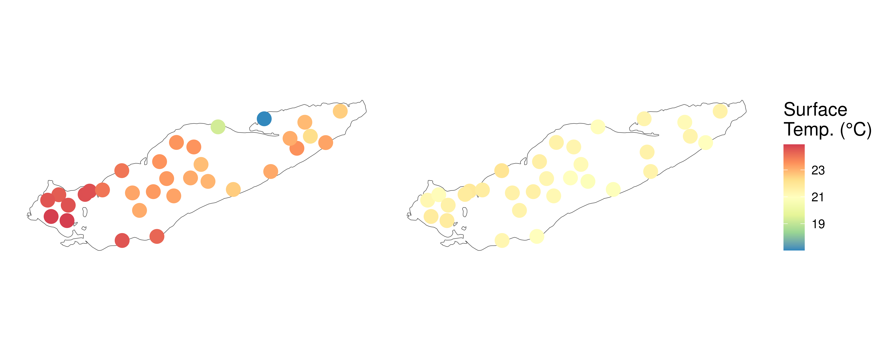
meta_sf %>%
filter(Month != "May", Depth_Class == "B") %>%
mutate(Month = factor(Month, levels = c("May","August","September"))) %>%
ggplot() +
geom_sf(data = erie_outline, fill = NA) +
geom_sf(aes(color = ctd_temperature), size = 5, alpha = 1) +
scale_color_distiller(palette = "Spectral", na.value = "white") +
labs(color = "Bottom\nTemp. (°C)") +
facet_wrap(~Month) +
theme(axis.line = element_blank(),
axis.text = element_blank(),
axis.ticks = element_blank(),
strip.text = element_blank()
)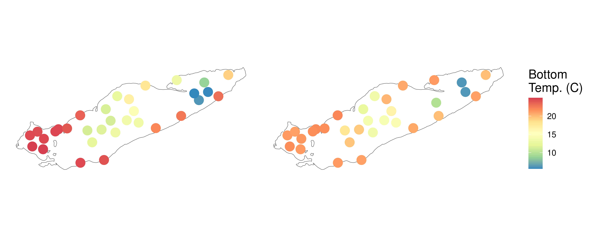
meta_sf %>%
filter(Month != "May", Depth_Class == "S") %>%
mutate(Month = factor(Month, levels = c("May","August","September"))) %>%
ggplot() +
geom_sf(data = erie_outline, fill = NA) +
geom_sf(aes(color = ctd_oxygen), size = 5, alpha = 1) +
scale_color_distiller(palette = "Spectral", na.value = "white") +
labs(color = "Surface\nOxygen (mg/L)") +
facet_wrap(~Month) +
theme(axis.line = element_blank(),
axis.text = element_blank(),
axis.ticks = element_blank(),
strip.text = element_blank()
)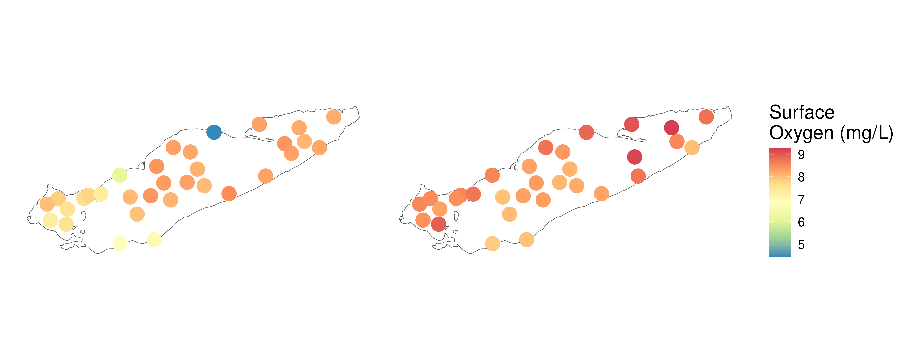
meta_sf %>%
filter(Month != "May", Depth_Class == "B") %>%
mutate(Month = factor(Month, levels = c("May","August","September"))) %>%
ggplot() +
geom_sf(data = erie_outline, fill = NA) +
geom_sf(aes(color = ctd_oxygen), size = 5, alpha = 1) +
scale_color_distiller(palette = "Spectral", na.value = "white") +
labs(color = "Bottom\nOxygen (mg/L)") +
facet_wrap(~Month) +
theme(axis.line = element_blank(),
axis.text = element_blank(),
axis.ticks = element_blank(),
strip.text = element_blank()
)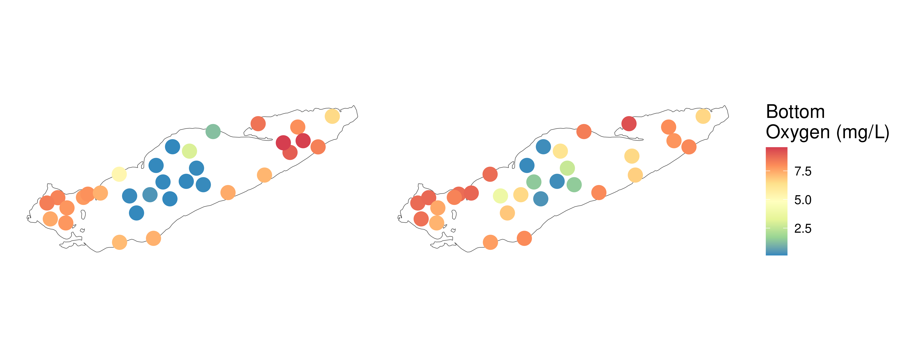
meta_sf %>%
filter(Month != "May", Depth_Class == "S") %>%
mutate(Month = factor(Month, levels = c("May","August","September"))) %>%
ggplot() +
geom_sf(data = erie_outline, fill = NA) +
geom_sf(aes(color = ctd_beamAttenuation), size = 5, alpha = 1) +
scale_color_distiller(palette = "Spectral", na.value = "white") +
labs(color = "Surface\nBeam Attenuation (1/m)") +
facet_wrap(~Month) +
theme(axis.line = element_blank(),
axis.text = element_blank(),
axis.ticks = element_blank(),
strip.text = element_blank()
)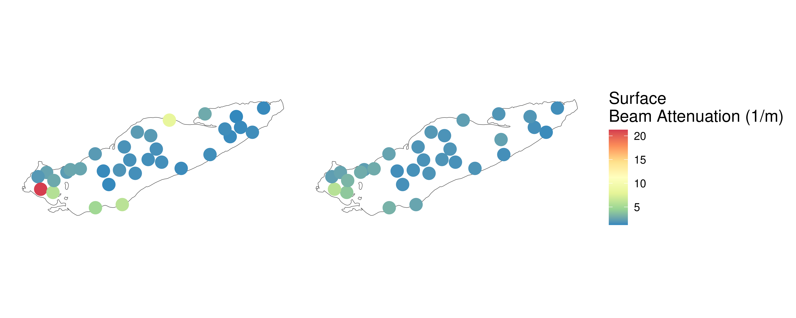
meta_sf %>%
filter(Month != "May", Depth_Class == "B") %>%
mutate(Month = factor(Month, levels = c("May","August","September"))) %>%
ggplot() +
geom_sf(data = erie_outline, fill = NA) +
geom_sf(aes(color = ctd_beamAttenuation), size = 5, alpha = 1) +
scale_color_distiller(palette = "Spectral", na.value = "white") +
labs(color = "Bottom\nBeam Attenuation (1/m)") +
facet_wrap(~Month) +
theme(axis.line = element_blank(),
axis.text = element_blank(),
axis.ticks = element_blank(),
strip.text = element_blank()
)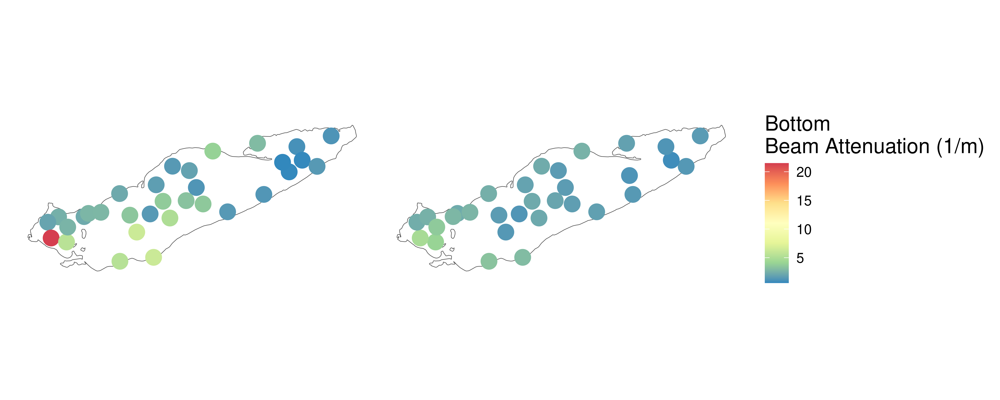
Join in Sample Data
ctd_and_wq_for_join <-
ctd_and_wq %>%
select(-Longitude, -Latitude)
meta_w_wq <- meta_w_toxins %>%
left_join(ctd_and_wq_for_join)
meta_w_wq %>%
filter(Station_ID == "78") Sample_ID DNA_ID input filtered denoisedF denoisedR
1 AAM_ERI_20240915_78_FP_BT_1 KH_D071 93840 61805 57284 55226
2 AAM_ERI_20240813_78_FP_ET_1 KH_D037 1145100 765659 762773 762981
3 AAM_ERI_20240521_78_FP_ET_1 KH_D007 550656 357591 356857 356729
4 AAM_ERI_20240813_78_FP_BT_1 KH_D038 938495 600428 593209 593015
5 AAM_ERI_20240521_78_FP_BT_1 KH_D008 614870 390000 387134 386364
6 AAM_ERI_20240915_78_FP_ET_1 KH_D070 783280 517745 515328 515245
merged nochim perc_reads_retained Station_ID Date Depth Station_Name
1 45009 34016 36.24893 78 20240915 22.0 ER 78M
2 753747 699986 61.12881 78 20240813 5.0 ER 78M
3 353638 307139 55.77693 78 20240521 5.0 ER78M
4 579421 535557 57.06551 78 20240813 22.0 ER 78M
5 381415 326794 53.14847 78 20240521 21.7 ER78M
6 510733 451522 57.64503 78 20240915 5.0 ER 78M
Water_Surface_Temp_C Latitude Longitude Month Depth_Class Rep_ID
1 20.90 42.11722 -81.250383 September B September_78_B
2 23.08 42.11645 -81.249717 August S August_78_S
3 15.00 42.11655 -81.2503 May S May_78_S
4 23.08 42.11645 -81.249717 August B August_78_B
5 15.00 42.11655 -81.2503 May B May_78_B
6 20.90 42.11722 -81.250383 September S September_78_S
Basin
1 C
2 C
3 C
4 C
5 C
6 C
Notes
1 Spin column from 178030015_2. NA Very sulfurous smell! MULTIPLE DEPTHS
2 NA NA Integrated sample; discrete depths separated by semi-colon; Matching depths for surface sample with GLNPO for nutrients Coleman Lab sampling Surface, mid and B-; DCL just above the thermocline
3 NA NA Integrated sample; discrete depths separated by semi-colon NA
4 NA NA NA Coleman Lab sampling Surface, mid and B-; DCL just above the thermocline
5 NA NA NA NA
6 did vortex step before incubating PW1 at 65C NA Integrated sample; discrete depths separated by semi-colon MULTIPLE DEPTHS
Microcystin_Total Anatoxin_Total Toxins_Measured ctd_temperature
1 NA NA <NA> 14.150963
2 0 0 Yes 23.120711
3 NA NA <NA> 13.566500
4 NA NA <NA> 13.575475
5 NA NA <NA> 7.475257
6 0 0 Yes 20.990534
ctd_conductivity ctd_par ctd_beamAttenuation ctd_beamTransmission
1 223.9782 10.71724 1.977470 61.00246
2 252.2818 186.51968 1.530098 68.21574
3 204.7184 9815.59744 1.024739 77.40062
4 218.6453 10.71326 3.282179 44.01963
5 175.4897 281.64516 1.343582 71.49041
6 242.8891 10.87000 1.759356 64.43701
ctd_fluorescence ctd_spar ctd_upoly ctd_oxygen ctd_specificConductance
1 0.6554006 0.00000 0.04026893 0.2378152 286.0195
2 1.6199505 24.81052 0.05785300 8.2744150 262.1036
3 0.1809466 1774.98339 0.05817088 11.2720580 265.3730
4 0.4682123 30.02995 0.05883646 0.1312877 283.3754
5 0.4896167 1770.87131 0.05770694 9.3459052 270.1906
6 1.7339410 0.00000 0.04008772 8.0531369 264.0353
ctd_salinity nh4_ug_n_l n_ox_ug_n_l srp_ug_p_l tn_ug_n_l tp_ug_p_l k_mg_l
1 1829727 169.0 2.70 12.2000 421.0000 65.60 1.313
2 1453729 NA 3.90 0.4135 259.0000 6.20 1.410
3 1507033 13.1 29.50 0.8170 239.2561 74.00 1.254
4 1784991 NA 121.00 0.6670 341.0000 12.10 1.510
5 1540070 20.3 51.70 1.3900 258.2424 6.92 1.276
6 1487272 12.1 2.03 0.4000 276.0000 17.10 1.352
na_mg_l ca_mg_l mg_mg_l cl_mg_l so4_mg_l doc_mg_c_l si_mg_si_o2_l chl_a_ug_l
1 8.424 31.52 8.454 14.8165 17.3706 2.709000 3.4666370 3.920
2 8.750 32.10 8.950 14.7500 NA NA 0.2660000 5.779
3 8.510 29.36 8.442 15.5112 19.0836 2.552721 0.4196956 0.880
4 9.090 35.10 9.110 15.4000 NA NA 3.0240000 1.168
5 8.518 31.08 8.494 15.2174 19.1253 2.501499 1.2198893 2.560
6 7.928 30.28 8.474 15.5145 19.4818 2.440000 1.2838684 7.840
po_p_ug_p_l po_n_ug_n_l pH np_ratio
1 342.0 1420 NA 14.210584
2 NA NA 8.545 92.500000
3 222.0 654 NA 7.159206
4 NA NA 7.500 62.402597
5 87.3 485 NA 82.633318
6 295.0 1700 NA 35.739348meta_physeq <- tree_prok_physeq
meta_physeq@sam_data <- NULL
row.names(meta_w_wq) <- meta_w_wq$DNA_ID
meta_physeq <- merge_phyloseq(meta_physeq, sample_data(meta_w_wq))save(sample_info, file = "data/05_Metadata_Curation/sample_info.RData")
save(meta_physeq, file = "data/05_Metadata_Curation/meta_physeq.RData")# Reproducibility
devtools::session_info()─ Session info ───────────────────────────────────────────────────────────────
setting value
version R version 4.3.3 (2024-02-29)
os Rocky Linux 9.8 (Blue Onyx)
system x86_64, linux-gnu
ui X11
language (EN)
collate en_US.UTF-8
ctype en_US.UTF-8
tz America/New_York
date 2026-10-16
pandoc 3.1.1 @ /usr/lib/rstudio-server/bin/quarto/bin/tools/ (via rmarkdown)
─ Packages ───────────────────────────────────────────────────────────────────
package * version date (UTC) lib source
abind 1.4-8 2024-09-12 [2] CRAN (R 4.3.3)
ade4 1.7-24 2026-03-21 [1] CRAN (R 4.3.3)
ape 5.8-1 2024-12-16 [1] CRAN (R 4.3.3)
Biobase 2.62.0 2023-10-24 [2] Bioconductor
BiocGenerics 0.48.1 2023-11-01 [2] Bioconductor
biomformat 1.30.0 2023-10-24 [1] Bioconductor
Biostrings 2.70.3 2024-03-13 [1] Bioconductor 3.18 (R 4.3.2)
bit 4.5.0 2024-09-20 [2] CRAN (R 4.3.3)
bit64 4.5.2 2024-09-22 [2] CRAN (R 4.3.3)
bitops 1.0-9 2024-10-03 [2] CRAN (R 4.3.3)
cachem 1.1.0 2024-05-16 [2] CRAN (R 4.3.3)
cellranger 1.1.0 2016-07-27 [1] CRAN (R 4.3.2)
class 7.3-22 2023-05-03 [2] CRAN (R 4.3.3)
classInt 0.4-11 2025-01-08 [2] CRAN (R 4.3.3)
cli 3.6.6 2026-04-09 [1] CRAN (R 4.3.3)
cluster 2.1.6 2023-12-01 [2] CRAN (R 4.3.3)
codetools 0.2-19 2023-02-01 [2] CRAN (R 4.3.3)
crayon 1.5.3 2024-06-20 [2] CRAN (R 4.3.3)
data.table 1.18.6.1 2026-08-24 [1] CRAN (R 4.3.3)
DBI 1.2.3 2024-06-02 [2] CRAN (R 4.3.3)
devtools 2.4.5 2022-10-11 [2] CRAN (R 4.3.3)
digest 0.6.37 2024-08-19 [2] CRAN (R 4.3.3)
dplyr * 1.2.1 2026-04-03 [1] CRAN (R 4.3.3)
e1071 1.7-17 2025-12-18 [2] CRAN (R 4.3.3)
ellipsis 0.3.2 2021-04-29 [2] CRAN (R 4.3.3)
evaluate 1.0.1 2024-10-10 [2] CRAN (R 4.3.3)
extraDistr 1.10.0.5 2026-07-13 [1] CRAN (R 4.3.3)
farver 2.1.2 2024-05-13 [2] CRAN (R 4.3.3)
fastmap 1.2.0 2024-05-15 [2] CRAN (R 4.3.3)
forcats * 1.0.1 2025-09-25 [1] CRAN (R 4.3.3)
foreach 1.5.2 2022-02-02 [1] CRAN (R 4.3.3)
fs 1.6.5 2024-10-30 [2] CRAN (R 4.3.3)
fun.gus * 0.5.1 2026-10-07 [1] Github (MarschmiLab/fun.gus@ad8bd98)
furrr 0.4.0 2026-03-31 [1] CRAN (R 4.3.3)
future 1.76.0 2026-09-24 [1] CRAN (R 4.3.3)
generics 0.1.4 2025-05-09 [1] CRAN (R 4.3.3)
GenomeInfoDb 1.38.8 2024-03-15 [2] Bioconductor 3.18 (R 4.3.3)
GenomeInfoDbData 1.2.11 2024-11-25 [2] Bioconductor
ggplot2 * 3.5.2 2025-04-09 [1] CRAN (R 4.3.3)
globals 0.19.1 2026-03-13 [1] CRAN (R 4.3.3)
glue 1.8.1 2026-04-17 [1] CRAN (R 4.3.3)
gtable 0.3.6 2024-10-25 [2] CRAN (R 4.3.3)
hillR 0.5.2 2023-08-19 [1] CRAN (R 4.3.3)
hms 1.1.4 2025-10-17 [1] CRAN (R 4.3.3)
htmltools 0.5.8.1 2024-04-04 [2] CRAN (R 4.3.3)
htmlwidgets 1.6.4 2023-12-06 [2] CRAN (R 4.3.3)
httpuv 1.6.15 2024-03-26 [2] CRAN (R 4.3.3)
igraph 2.1.1 2024-10-19 [2] CRAN (R 4.3.3)
IRanges 2.36.0 2023-10-24 [2] Bioconductor
iterators 1.0.14 2022-02-05 [1] CRAN (R 4.3.3)
janitor 2.2.1 2024-12-22 [1] CRAN (R 4.3.3)
jsonlite 1.8.9 2024-09-20 [2] CRAN (R 4.3.3)
KernSmooth 2.23-22 2023-07-10 [2] CRAN (R 4.3.3)
knitr 1.52 2026-09-06 [1] CRAN (R 4.3.3)
labeling 0.4.3 2023-08-29 [2] CRAN (R 4.3.3)
later 1.3.2 2023-12-06 [2] CRAN (R 4.3.3)
lattice 0.22-5 2023-10-24 [2] CRAN (R 4.3.3)
lifecycle 1.0.5 2026-01-08 [1] CRAN (R 4.3.3)
listenv 0.9.1 2024-01-29 [2] CRAN (R 4.3.3)
lubridate * 1.9.5 2026-02-04 [1] CRAN (R 4.3.3)
magrittr 2.0.5 2026-04-04 [1] CRAN (R 4.3.3)
MASS 7.3-60.0.1 2024-01-13 [2] CRAN (R 4.3.3)
Matrix 1.6-5 2024-01-11 [2] CRAN (R 4.3.3)
memoise 2.0.1 2021-11-26 [2] CRAN (R 4.3.3)
mgcv 1.9-1 2023-12-21 [2] CRAN (R 4.3.3)
mime 0.12 2021-09-28 [2] CRAN (R 4.3.3)
miniUI 0.1.1.1 2018-05-18 [2] CRAN (R 4.3.3)
multtest 2.58.0 2023-10-24 [1] Bioconductor
NatParksPalettes 0.2.0 2022-10-09 [1] CRAN (R 4.3.3)
nlme 3.1-164 2023-11-27 [2] CRAN (R 4.3.3)
openxlsx 4.2.9 2026-09-02 [1] CRAN (R 4.3.3)
otel 0.2.0 2025-08-29 [1] CRAN (R 4.3.3)
pacman 0.5.1 2019-03-11 [1] CRAN (R 4.3.2)
parallelly 1.48.0 2026-06-29 [1] CRAN (R 4.3.3)
permute 0.9-10 2026-02-06 [1] CRAN (R 4.3.3)
phyloseq * 1.46.0 2023-10-24 [1] Bioconductor
pillar 1.11.1 2025-09-17 [1] CRAN (R 4.3.3)
pkgbuild 1.4.5 2024-10-28 [2] CRAN (R 4.3.3)
pkgconfig 2.0.3 2019-09-22 [2] CRAN (R 4.3.3)
pkgload 1.4.0 2024-06-28 [2] CRAN (R 4.3.3)
plyr 1.8.9 2023-10-02 [2] CRAN (R 4.3.3)
profvis 0.4.0 2024-09-20 [2] CRAN (R 4.3.3)
promises 1.3.0 2024-04-05 [2] CRAN (R 4.3.3)
proxy 0.4-29 2025-12-29 [2] CRAN (R 4.3.3)
purrr * 1.2.2 2026-04-10 [1] CRAN (R 4.3.3)
R6 2.6.1 2025-02-15 [1] CRAN (R 4.3.3)
ragg 1.3.3 2024-09-11 [2] CRAN (R 4.3.3)
RColorBrewer 1.1-3 2022-04-03 [2] CRAN (R 4.3.3)
Rcpp 1.1.2 2026-07-05 [1] CRAN (R 4.3.3)
RCurl 1.98-1.16 2024-07-11 [2] CRAN (R 4.3.3)
readr * 2.2.0 2026-02-19 [1] CRAN (R 4.3.3)
readxl 1.5.0.1 2026-09-16 [1] CRAN (R 4.3.3)
remotes 2.5.0 2024-03-17 [2] CRAN (R 4.3.3)
reshape2 1.4.4 2020-04-09 [2] CRAN (R 4.3.3)
rhdf5 2.46.1 2023-11-29 [1] Bioconductor 3.18 (R 4.3.2)
rhdf5filters 1.14.1 2023-11-06 [1] Bioconductor
Rhdf5lib 1.24.2 2024-02-07 [1] Bioconductor 3.18 (R 4.3.2)
rlang 1.3.0 2026-07-05 [1] CRAN (R 4.3.3)
rmarkdown 2.32 2026-09-01 [1] CRAN (R 4.3.3)
rstudioapi 0.17.1 2024-10-22 [2] CRAN (R 4.3.3)
s2 1.1.11 2026-06-01 [2] CRAN (R 4.3.3)
S4Vectors 0.40.2 2023-11-23 [2] Bioconductor 3.18 (R 4.3.3)
scales 1.4.0 2025-04-24 [1] CRAN (R 4.3.3)
sessioninfo 1.2.2 2021-12-06 [2] CRAN (R 4.3.3)
sf * 1.1-3 2026-09-11 [1] CRAN (R 4.3.3)
shiny 1.9.1 2024-08-01 [2] CRAN (R 4.3.3)
snakecase 0.11.1 2023-08-27 [1] CRAN (R 4.3.3)
stringi 1.8.4 2024-05-06 [2] CRAN (R 4.3.3)
stringr * 1.5.1 2023-11-14 [2] CRAN (R 4.3.3)
survival 3.5-8 2024-02-14 [2] CRAN (R 4.3.3)
systemfonts 1.3.2 2026-03-05 [1] CRAN (R 4.3.3)
terra * 1.9-50 2026-09-08 [1] CRAN (R 4.3.3)
textshaping 0.4.0 2024-05-24 [2] CRAN (R 4.3.3)
tibble * 3.3.1 2026-01-11 [1] CRAN (R 4.3.3)
tidyr * 1.3.2 2025-12-19 [1] CRAN (R 4.3.3)
tidyselect 1.2.1 2024-03-11 [1] CRAN (R 4.3.2)
tidyverse * 2.0.0 2023-02-22 [1] CRAN (R 4.3.2)
timechange 0.4.0 2026-01-29 [1] CRAN (R 4.3.3)
tzdb 0.5.0 2025-03-15 [1] CRAN (R 4.3.3)
units 1.0-1 2026-03-11 [2] CRAN (R 4.3.3)
urlchecker 1.0.1 2021-11-30 [2] CRAN (R 4.3.3)
usethis 3.2.2 2026-09-10 [1] CRAN (R 4.3.3)
utf8 1.2.6 2025-06-08 [1] CRAN (R 4.3.3)
vctrs 0.7.3 2026-04-11 [1] CRAN (R 4.3.3)
vegan 2.7-6 2026-08-31 [1] CRAN (R 4.3.3)
vroom 1.7.1 2026-03-31 [1] CRAN (R 4.3.3)
withr 3.0.3 2026-06-19 [1] CRAN (R 4.3.3)
wk 0.9.5 2025-12-18 [2] CRAN (R 4.3.3)
xfun 0.61 2026-09-16 [1] CRAN (R 4.3.3)
xtable 1.8-4 2019-04-21 [2] CRAN (R 4.3.3)
XVector 0.42.0 2023-10-24 [2] Bioconductor
yaml 2.3.10 2024-07-26 [2] CRAN (R 4.3.3)
zip 2.3.1 2024-01-27 [2] CRAN (R 4.3.3)
zlibbioc 1.48.2 2024-03-13 [2] Bioconductor 3.18 (R 4.3.3)
[1] /home/arp277/R/x86_64-pc-linux-gnu-library/4.3
[2] /programs/R-4.3.3/lib64/R/library
──────────────────────────────────────────────────────────────────────────────